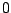
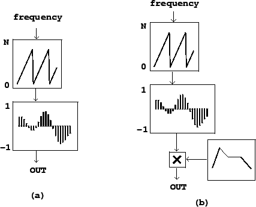
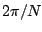
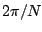
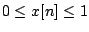
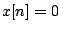
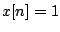
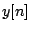
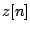

Figure 2.2 suggests an easy way to synthesize any desired fixed
waveform at any desired frequency, using the block diagram shown in Figure
2.3. The upper block is an oscillator--not the sinusoidal
oscillator we saw earlier, but one that produces sawtooth waves instead. Its
output values, as indicated at the left of the block, should range from  to
the wavetable size  . This is used as an index into the wavetable lookup
block (introduced in Figure 2.1), resulting in a periodic waveform.
Figure 2.3 (part b) adds an envelope generator and a multiplier to control
the output amplitude in the same way as for the sinusoidal oscillator shown in
Figure 1.7 (Page
. This is used as an index into the wavetable lookup
block (introduced in Figure 2.1), resulting in a periodic waveform.
Figure 2.3 (part b) adds an envelope generator and a multiplier to control
the output amplitude in the same way as for the sinusoidal oscillator shown in
Figure 1.7 (Page  ). Often, one uses a wavetable with (RMS or peak) amplitude 1, so that
the amplitude of the output is just the magnitude of the envelope generator's
output.
). Often, one uses a wavetable with (RMS or peak) amplitude 1, so that
the amplitude of the output is just the magnitude of the envelope generator's
output.
|  |
Wavetable oscillators are often used to synthesize sounds with specified,
static spectra. To do this, you can pre-compute  samples of any waveform
of period
samples of any waveform
of period  (angular frequency ) by adding up the elements of the
Fourier Series (Page
(angular frequency ) by adding up the elements of the
Fourier Series (Page  ). The computation involved in
setting up the wavetable at first might be significant, but this may be done
in advance of the synthesis process, which might take place in real time.
). The computation involved in
setting up the wavetable at first might be significant, but this may be done
in advance of the synthesis process, which might take place in real time.
While direct additive synthesis of complex waveforms, as shown in Chapter 1,
is in principle infinitely flexible as a technique for producing time-varying
timbres, wavetable synthesis is much less expensive in terms of computation
but requires switching wavetables to change the timbre. An intermediate
technique, more flexible and expensive than simple wavetable synthesis but
less flexible and less expensive than additive synthesis, is to create
time-varying mixtures between a small number of fixed wavetables. If the
number of wavetables is only two, this is in effect a cross-fade between
the two waveforms, as diagrammed in Figure 2.4. Suppose we wish to
use some signal
 to control the relative strengths of the two
waveforms, so that, if , we get the first one and if  we
get the second. Denoting the two signals to be cross-faded by  and
, we compute the signal
When using this technique to cross-fade between wavetable oscillators, it might be desirable to keep the phases of corresponding partials the same across the wavetables, so that their amplitudes combine additively when they are mixed. On the other hand, if arbitrary wavetables are used (borrowed, for instance, from a recorded sound) there will be a phasing effect as the different waveforms are mixed.
This scheme can be extended in a daisy chain to move along a continuous path between a succession of timbres. Alternatively, or in combination with daisy-chaining, cross-fading may be used to interpolate between two different timbres, for example as a function of musical dynamic. To do this you would prepare two or even several waveforms of a single synthetic voice played at different dynamics, and interpolate between successive ones as a function of the output dynamic you want.